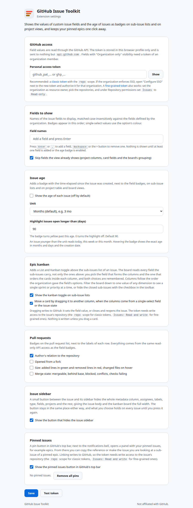
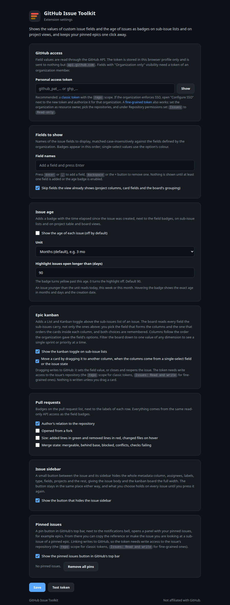

GitHub Issue Toolkit
See your organization's custom issue fields on every sub-issue of an epic and on every row of a Projects view, right where GitHub shows only the issue type.
See your organization's custom issue fields on every sub-issue of an epic and on every row of a Projects view, right where GitHub shows only the issue type.
GitHub organizations can define their own custom issue fields. Each issue shows them in its sidebar, but the Sub-issues list on a parent issue shows only the issue type, and Projects views show only the columns you add by hand. To know a field value for twenty sub-issues you have to open twenty tabs. This extension puts the values you care about directly on each row, on sub-issue lists and on project tables and boards.
Illustration with an invented repository. The badges show whichever fields you configure; a field named Priority is used here as an example.
Single-select, multi-select, text, number and date fields all work. Single-select badges use the colour of the chosen option, so a red option stays red.
Choose which fields to show and in what order on the settings page. One field or five, per your workflow.
All visible rows, across repositories, are fetched in batched GitHub GraphQL queries of 60 issues. Results are cached for five minutes.
The same badges appear on GitHub Projects: after the issue number in the table layout, under the title on board cards. Draft items and pull requests are left alone.
An optional gray badge shows how long ago each issue was created, in months, weeks or days. Off by default, one checkbox in the settings.
A pin button in GitHub's top bar keeps your epics one click away: copy their reference, or make the issue you are looking at a sub-issue of one. Optional as well.
Each badge links to the repository's issue search filtered by that field value, the same way GitHub's own field badges do.
Badges reuse GitHub's own colour tokens, so they match light and dark themes and every colour blindness setting GitHub offers.
No analytics, no third-party servers. Your token stays in your browser and only ever talks to api.github.com. The only write is the sub-issue link you trigger yourself.
The same badges follow you to Projects views, an optional age badge tells you how long an issue has been open, and the pinned issues panel keeps your epics one click away. Illustrations of an invented repository, with a field named Priority as the example.
Badges come right after the issue number in the title cell, so a table needs no extra columns.
On board cards the badges sit under the title. The age badge is the gray one, shown here enabled.
Off by default. When enabled, a gray badge shows how long ago the issue was created, in months, weeks or days; hovering gives the exact age and the creation date.
Months, weeks and days shown side by side; in practice one unit applies to every row.
The pin button sits next to the notifications bell with the number of pins. The dropdown lists your epics with their type; Link makes the issue you are looking at a sub-issue of one, Copy puts its reference on the clipboard.
acme/webapp#1511Closed epics stay pinned, struck through. Link is disabled on the epic you are currently viewing.
A handful of plain files, no build step, one code base for Chromium and Firefox. The extension never scrapes the field values from the page, because organization-only fields are not in the HTML. It asks the GitHub API instead.
A content script on github.com watches the page for sub-issue lists, project table rows and board cards, and collects the issue links: owner, repository, number.
The background script (a service worker on Chromium, an event page on Firefox) groups those issues by repository and runs one GraphQL query per batch of 60 using Issue.issueFieldValues and createdAt, with your token.
From the returned values it keeps only the fields you configured, in your order, and hands back field, value, colour and the creation date per issue.
The content script inserts a badge per value right after the issue type badge, after the issue number in project tables, or under the title on board cards, plus the age badge when enabled. It re-renders when GitHub redraws the page.
{ r0: repository(owner: "org", name: "repo") {
i7700: issue(number: 7700) {
issueFieldValues(first: 30) { nodes {
... on IssueFieldSingleSelectValue { name color field { ... on IssueFieldSingleSelect { name } } }
... on IssueFieldTextValue { value field { ... on IssueFieldText { name } } }
# number, date and multi-select values follow the same shape
} }
}
# one alias per visible sub-issue, one repository block per repository
} }The query above is what the background script sends, one such request per 60 issues. GitHub's GraphQL rate limit is 5,000 points per hour per token; a page with fifty sub-issues costs one point.
The extension is plain files with no build step. It runs in every Chromium-based browser and in Firefox.
github-issue-toolkit-<version>-chrome.zip from the releases page and unzip it, or clone MilosPaunovic/github-issue-toolkit.chrome://extensions (edge://extensions, brave://extensions, and so on) and switch on Developer mode.github-issue-toolkit-<version>-firefox.zip from the releases page, or build it with scripts/package.sh.about:debugging#/runtime/this-firefox, click Load Temporary Add-on, pick the zip. Temporary add-ons are removed when Firefox restarts; a permanent install needs a package signed by Mozilla.Safari is not supported: it needs Apple's converter, an Xcode project and a developer account. Other browsers that implement Manifest V3 WebExtensions should work with one of the two manifests, since the code uses the browser namespace when present and falls back to chrome.
Custom fields are usually set to "Organization only" visibility, so GitHub returns them only to a token of an organization member. The extension needs read access to issues. Write access is needed only if you want to link issues to pinned epics from the panel.
Create it at github.com/settings/tokens/new.
repo scope. Nothing else.github-issue-toolkit so you recognise it later.Create it at github.com/settings/personal-access-tokens/new.
Issues to Read-only, or Read and write if you want to link issues to pinned epics. GitHub adds Metadata: Read-only automatically.Paste the token on the settings page and click Test token. It confirms which account the token belongs to before anything is saved.
The token and the fields to show are the two essentials; the age badge and the pinned issues button are optional extras with their own cards. Each field is a chip. Press Enter or , to add one, Backspace or the × button to remove one. Names are matched case-insensitively against the fields your organization defines, and badges appear in the order of the chips. Nothing is shown until at least one field is added or the age badge is enabled.


Triaging a backlog usually means linking many issues to a handful of epics. The pin button in GitHub's top bar, next to the notifications bell, keeps those epics at hand. See the illustration above.
Pin the issue you are looking at, the item open in a project side panel, or paste an issue URL or owner/repo#123. Each pin shows its type and title.
One click makes the current issue a sub-issue of the pinned epic through GitHub's addSubIssue mutation. If the issue already has another parent, you are asked before it is moved.
Copies owner/repo#123 to the clipboard, ready to paste into a comment or a task list.
Pins are stored locally in your browser and shared across tabs; the open or closed state of the panel is per tab. A red dot on the button means the last request failed, for example because no token is set yet. The whole feature can be switched off in the settings.
Your token, your field list, your preferences and your pinned issues, in chrome.storage.local, on your device. Uninstalling removes all of it.
Repository owner, name and issue number of the issues on the page you are viewing, to api.github.com, with your token in the header. The only write is the sub-issue link you click yourself. Nothing else, to no one else.
No analytics, telemetry, crash reports, cookies or third-party services. The full policy is in PRIVACY.md.
Because organization-only field values are not in the page HTML; GitHub loads them through its authenticated API only for members. A token is the only way an extension can read them. If your organization sets fields to "Public" visibility, a token is still required by the API, but any account's token will do.
On the sub-issues list of an issue page, including nested sub-issues once you expand them, and on GitHub Projects views: table rows and board cards. Not on the plain issues list, where GitHub already shows pinned field values.
Yes. Making an issue a sub-issue of a pinned epic writes to GitHub, so the token needs write access to the issue's repository: the repo scope on a classic token, or Issues: Read and write on a fine-grained one. Badges alone work with read-only access.
Yes. Rows are grouped by repository and fetched in one query. Each badge links to the search in its own repository.
Those issues simply have no value for that field. Check the field name on the settings page matches the organization's field name; matching is case-insensitive but the full name must match.
Values are cached for five minutes per issue. Reload the page after that, or change any setting to clear the cache immediately.
Every Chromium-based browser with Manifest V3 support: Chrome, Edge, Brave, Opera, Vivaldi, Arc. Firefox 140 or newer, using its own manifest that ships in the repository. Safari is not supported.
Firefox treats site access as an optional permission. Open the settings page and click Allow access to github.com, or use the extensions (puzzle) button in the toolbar and allow the extension on github.com. Badges appear on the next page load.
No. It is an independent open-source project under the MIT license. GitHub is a trademark of GitHub, Inc.